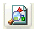
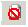

To
Click...
Result and/or Action
Accept an item
or
the Passed QC Flag
The item remains in the list until you close QCing for the Processing Job or Data Extract Job. The system flags the item as "Passed QC".
SHORTCUT: By pressing the Enter Key on the keyboard, you will move to the next image in the list AND apply the PASSED QC flag automatically. To remove the PASSED QC flag, simply press the DELETE key on the keyboard. You may now assign a flag or flags that are appropriate for the current image.
Reject an item
Rejects a previously accepted item. The "Passed QC" flag is no longer assigned to that item.
Auto-QC
or F4
The system automatically scrolls through each image based on the settings in the Auto-QC Options dialog. After invoking Auto-QC, use the + to increase speed by 25% or use the - to decrease speed by 25%.
Show Reprocess Options
 or F12
or F12
Opens the Reprocess Options dialog applicable for the Processing Job (General, Excel, Word, PowerPoint) or for the Data Extract Job.
Reprocess the selected item
 or F7
or F7
This option is disabled for a single selected document that has the imported native placeholder StellentID (14000).
The item is reprocessed by eCapture and remains in the list until it is flagged as "Passed QC". If you hold the CTRL key and click the icon, it will force the documents through Oracle (formerly Stellent) instead of the document type routines of eCapture. This does not apply to IBM Notes emails which cannot be handled by Oracle. When the Image to PDF option is selected in the General Tab (Processing Options), the image is reprocessed as a .PDF and stored in the Output directory.
If reprocessing a Data Extract document and one or more OCR options were selected in the Options for Data Extract Job dialog, a dialog appears indicating OCR is being performed on the document - page by page. The OCR operation may be canceled if necessary. Cancellation results in all pages, where OCR was not attempted, to be considered an OCR failure. The primary reprocess operation updates the OCR Low Confidence (average for all pages) flag accordingly.
Reprocess an item in its native application
Note: This option is disabled for a single selected document that has the imported native placeholder StellentID 14000.

or F8The native application opens. Ensure that the default printer is a Premium EDD Driver. Click the application’s Print button to reprocess the item. Close the native application. The item is reprocessed and remains in the list until it is flagged as "Passed QC". The metadata is populated. If you hold the CTRL key and click the icon, it will display a dialog where you can reprocess the item using the selected application.
Reprocess selected in Native Application via ShellExecute Print
Applies for both Processing Job and Data Extract Job sessions
Note: We recommend culling the document set down to the minimum number of items to minimize QCer interaction as well as breaking up larger groups of documents into multiple QC sessions and QCers. This will help cut down on the amount of time it takes to reprocess using ShellExecute Print Reprocess.
This option is disabled for a single selected document that has the imported native placeholder StellentID (14000).
Files must have an associated Print command for this feature to function without user intervention. This feature works best with Office, HTML, and text documents. Office 2007 is required for the full functionality of this feature.
The Office 2003 Print command does not work with HTML e-mails. If there is no associated Print command, the QCer will be prompted to Native Reprocess.
There should be a user monitoring the ShellExecute Print Reprocess as there may be dialog prompts, such as an error opening the Native application, that will not be handled automatically.
View in Native Application
Note: This option is disabled for a single selected document that has the imported native placeholder StellentID 14000.
Opens item in the native application for viewing. If you hold the CTRL key and click the icon, it will display a dialog where you can view the item using the selected application. Useful for testing output.
Reprocess all documents in the list
 or F9
or F9
All
documents in the list are reprocessed. If you hold the CTRL key
and click the icon, it will force the documents through Oracle
(formerly Stellent) instead of the document type routines of
Rotate every page in the document to the left
Rotates every page in the currently selected document 90 degrees to the left.
Rotate every page in the document to the right

Rotates every page in the currently selected document 90 degrees to the right.
OCR Pages with missing text
OCRs the current document selected in the list. Hold down Ctrl and click this icon to force OCR of all pages in the selected document.
Documents (images and PDFs) may be OCRed in Processing Jobs only.
Note: If any text already exists for any pages in a selected document set, any existing text is overwritten.
To OCR a group of non-contiguous documents, ctrl-click each document in the list separately. Each selected document is highlighted.
To OCR a group of contiguous documents, click the first document in the list and then shift-click another document in the list. These two documents, along with the documents that are located between them, will be OCRed. All documents in this contiguous group are highlighted.
During OCR, a Progress dialog appears.
If the job is canceled, a prompt appears indicating that OCR was aborted by the user.
Note:
OCR functionality is not available for
Replace Document Images with a Document Placeholder image

to display the Placeholder Options dialog.or
Ctrl + to create a Placeholder page that uses the default Placeholder options (no metadata)
Launches the Select Placeholder dialog where an existing, specific user-defined placeholder can be applied to the document.
Launches the Select Placeholder dialog where an existing, specific user-defined placeholder can be applied to the document.
For
User-defined placeholders may be created while
an
After the placeholder is applied, a new load file is created and the image is automatically loaded back to the case in Eclipse.
A new directory is created beneath the output
directory supplied when the
A callback is executed to load the new set of images into the review application such as Eclipse.
Note: For user-defined placeholders, full
metadata for documents sent through
Delete selected page

Deletes page in the image window. A deleted item will not be exported. None of the item’s information will be referenced.
For
After deletion, a new QC volume directory
is created beneath the original
A new load file is created using the options
of the
Delete page range

Delete from current page through end of document. Deleted items will not be exported; nor will the information from the deleted items be referenced.
For
After deletion, a new QC volume directory
is created beneath the original
A new load file is created using the options
of the
Mark Document As Exception
The marked document will show up as an exception in the Exception Reports. This differs from the QC Flag because the document will appear in the exception reports.